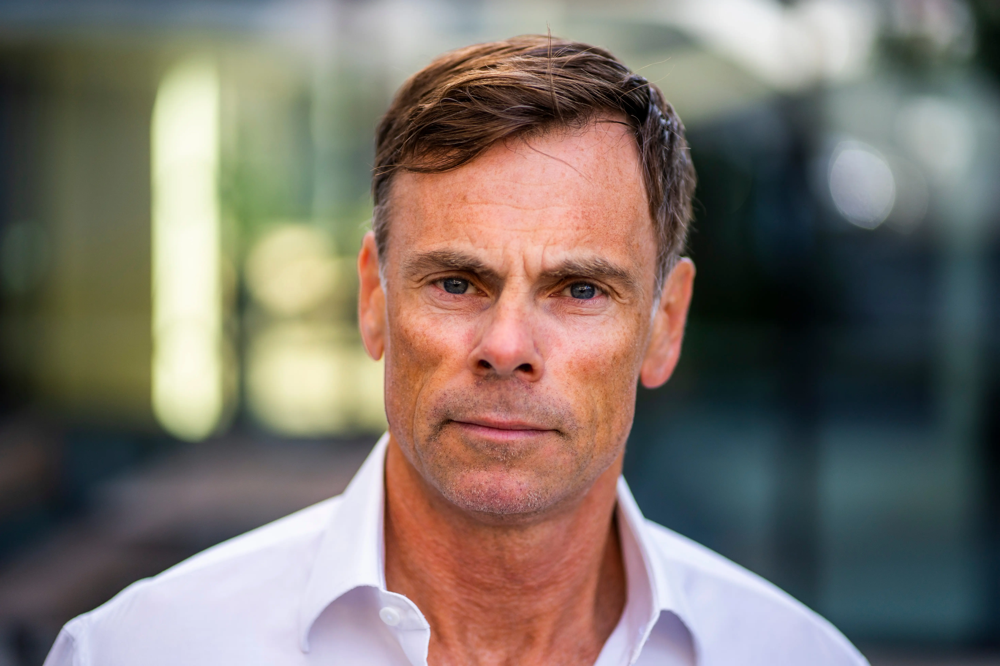
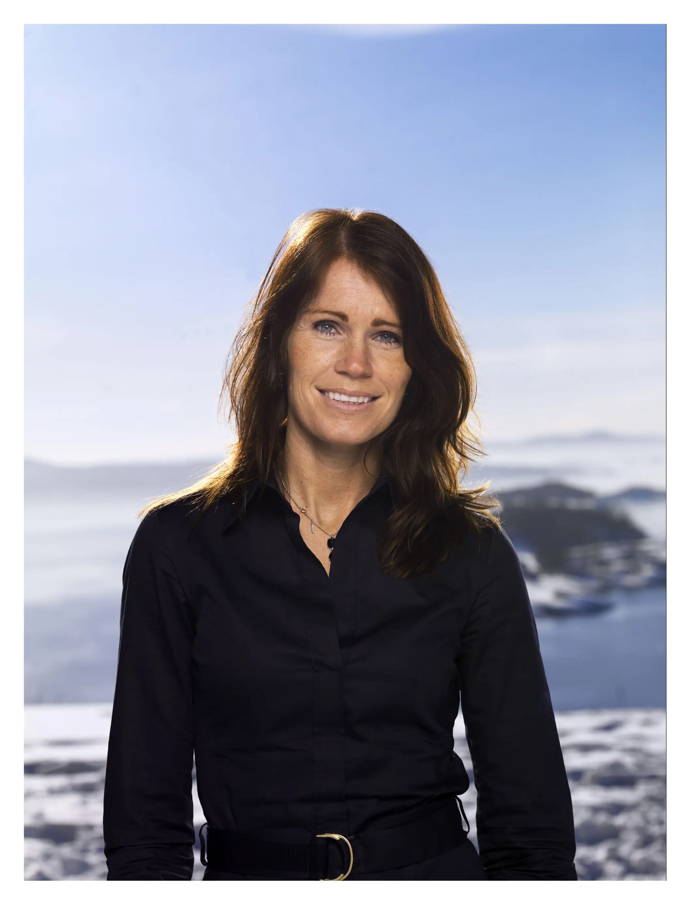

Sevencs is a privately owned investment and business development group with roots in Norway and Switzerland.
Founded by entrepreneurs with decades of experience building, scaling and investing in international companies, Sevencs focuses on long-term ownership, active value creation and international growth.
The founders have been involved in the development of several successful Nordic and international companies within software, technology, digital services, real estate and growth businesses.
We invest where we believe experience, network and operational involvement can create lasting value.
Our focus is not short-term financial returns, but building strong companies and sustainable growth over time.
Through direct and indirect ownership structures, Sevencs participates in a number of private and public investments. The group includes interests in companies and activities related to:
The founders have previously been involved in building and developing companies such as:
Sevencs operates through companies, investments and business activities across Norway, Switzerland, Italy and other international markets.

Serial entrepreneur and co-founder of Crayon Group (2002), Rune has spent nearly two decades building global technology businesses focused on enterprise software and digital transformation. Beyond Crayon, he co-founded Link Mobility and has held board positions at multiple innovation-driven companies, including Cyviz, Sevencs, and SoftwareONE. His strategy is deceptively simple: put customers first, maintain quality, and scale thoughtfully. Rune's track record spans IT services, enterprise software, mobility solutions, and venture capital allocation - all underpinned by deep roots in Telenor and decades of Nordic tech leadership.

CEO of Sevencs Holding AG and former CEO of Sevencs AS and 99X.no AS, Tone brings strategic vision to digital innovation and technology ventures. As chair of Lucky7, a premium equestrian business, she demonstrates operational excellence across diverse sectors. Tone combines hands-on leadership of high-growth tech companies with an entrepreneurial mindset, managing complex international operations and building world-class teams across Nordic and European markets.